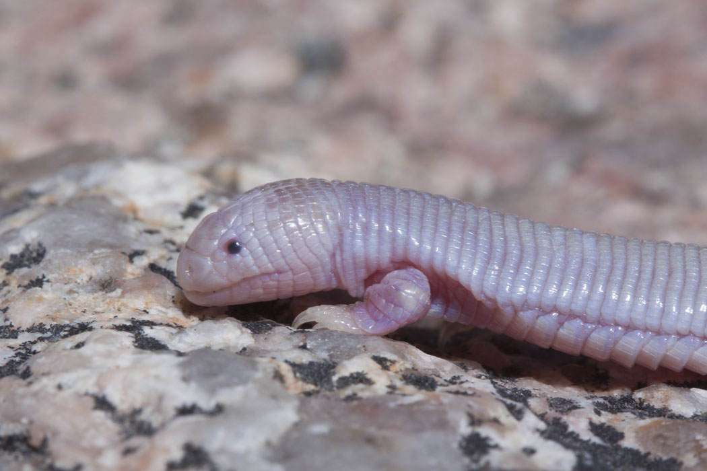
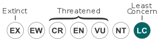

The best website in the world
From Wikipedia, the free encyclopedia
The Mexican mole lizard (Bipes biporus), commonly known as the five-toed worm lizard, or simply as Bipes, is a species of amphisbaenian,[2] which is endemic to the Baja California Peninsula. It is one of four species of amphisbaenians that have legs. It should not be confused with the axolotl, a salamander (Ambystoma mexicanum), which is usually called ajolote in Spanish. It is commonly found in Baja California.
Contents
They are pink, worm-like lizards, 18–24 cm (7.1–9.4 in) snout-to-vent length and 6–7 mm (0.24–0.28 in) in width, that live for one to two years. Their skin is closely segmented to give a corrugated appearance, and like earthworms, their underground movement is by peristalsis of the segments. Blunt heads allow them to burrow into sandy soils efficiently. The forelegs are strong and paddle-like, while the hind legs have disappeared, leaving behind only vestigial bones visible in X-rays.[2] The tail on these worm-like lizards are autotomous without any regeneration.
This species is oviparous and the females lay one to four eggs in July. The species only breeds underground. The eggs hatch after two months.
The Mexican mole lizard (B. biporus) is found in the states of Baja California, Baja California Sur, Guerrero and Chiapas, in Mexico.
Like all other amphisbaenians, this burrowing species only surfaces at night or after heavy rain. It uses its autotomous tail as an escape tatic for predators. Losing a part of the tail while burrowing can plug up the hole behind it, giving it time to escape from any kind of predator that might be chasing it down.
Mexican mole lizard
Conservation Status
Scientific classification
Kingdom: Animalia
Kingdom: Animalia
Kingdom: Animalia
Kingdom: Animalia
Kingdom: Animalia
Kingdom: Animalia
Kingdom: Animalia
Kingdom: Animalia
Kingdom: Animalia
Binomial Name
Synonyms
Euchirotes Biporus
Bipes Biporus
It is an opportunist carnivore and eats ants, termites, ground-dwelling insects, larvae, earthworms, and small animals including lizards. It usually pulls its prey under ground to start its meal.